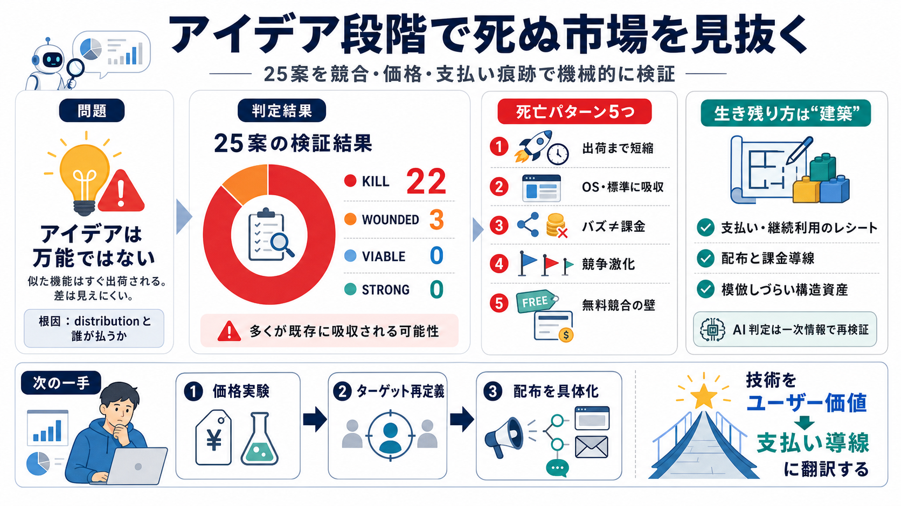

Useful AI in 2026: What Actually Works (And What's Just Hype ...
Useful AI in 2026: What Actually Works (And What’s Just Hype) | Ep 847 Mac Power Users 2570 subscribers 58 likes 2001 vi…

Useful AI in 2026: What Actually Works (And What’s Just Hype) | Ep 847 Mac Power Users 2570 subscribers 58 likes 2001 vi…
# Apple Accessibility AI Features 2026: What They Reveal About Apple Intelligence. The Apple Intelligence integrations c…
Apple WWDC 2026: The AI Story Everyone is Missing AI News & Strategy Daily | Nate B Jones 304000 subscribers 3310 likes …
# Best AI Assistant for iPhone 2026: 8 Picks Tested. We tested the best AI assistants for iPhone in 2026 — voice, action…
# Apple unveils an upgraded Siri voice assistant with new AI features at its annual conference. ## Analysts expect the i…